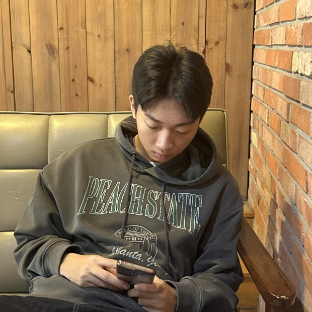

Cost-Guided Humanoid Motion Generation
Exploring humanoid motion generation and obstacle avoidance using reinforcement learning, diffusion models, and inference-time cost guidance.
I am an undergraduate student in Computer Science and Engineering at Korea University. My current research experience focuses on humanoid motion retargeting and learning-based motion generation, which has led me to explore how robots can learn flexible behaviors and adapt to complex environments.
My long-term goal is to develop intelligent robots that can understand human intentions, adapt their behaviors to human needs, and interact naturally and collaboratively with people.

My research interests include robot learning (reinforcement and imitation learning), humanoid motion generation and control, human–robot interaction (HRI), and generative models for robot behavior. I am especially interested in connecting learning-based robot control with natural human–robot collaboration.
Exploring humanoid motion generation and obstacle avoidance using reinforcement learning, diffusion models, and inference-time cost guidance.
Probabilistic time-series forecasting with a conditional variational autoencoder and macroeconomic indicators.
A PPO-based trading project exploring portfolio decisions, transaction costs, and risk management.